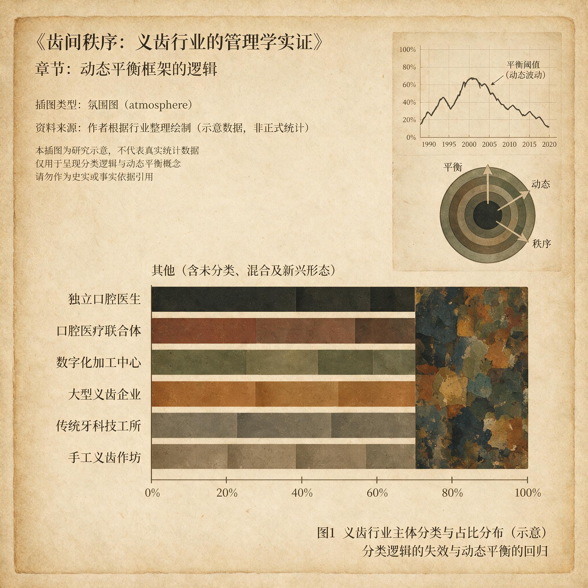

第 5 章
动态平衡框架的逻辑
返工原因分类账的第七栏是“其他”。表格横向排开，七栏等宽，最右一栏的空白最多。三个月的数据录入结束，“其他”排在第三，前面是“复核标准不清”和“设计沟通不足”。这不算触目。
真正这份分类逻辑本身的无力：一件修复体因设计沟通不足导致参数偏离，技师依习惯做了手工校正，复核时被判定不合格，该归入哪一栏？录入员犹豫过，最终勾了“其他”。这张表没有解决任何归属问题。它把所有无法归因的失败装进一个看起来正式的类别。

公告栏前人来人往，各自看得到自己的工序被分进哪一栏，也看得到“其他”两个字怎样把复杂的因果链条轻轻盖上。不会有人因为“其他”被追责，也不会有人因为“其他”去改流程。
质询会结束后，纪要落入档案。里面只有两个词：加强培训，优化流程。在场的人心照不宣，这两个词不会召回任何一件废品，也不会减少下一张返工单。
但没有一个人提出第三个方案，因为提出新方案意味着回答那四个没人愿意正面处理的问题：谁有权定义合格，谁来维护规则，经验如何编码，成本由谁承担。培训回答不了，流程优化回答不了。这四个问题悬在车间的灯管下，比那台未断电的切削机更安静，也更难清除。
清算到了必须摊开来说的时候。前四章已经各自看清一个环节的失效。第一章看清经验压在个体身上，一件修复体的质量取决于某位技师当天的状态。第二章看清订单散在无数小型工坊之间，规模经济无法形成，客户关系靠私人交情维持。第三章看清合规动作被放在工序之外，记录补做、签字代办，检查通过了，质量并没有因此更稳。第四章看清技术迭代没有消灭匠人经验，只是让经验失去了原有岗位，新的参数标准和判定规则还没建立，新旧两套逻辑在同一台设备前互相拆台。
单独拆开看，每一步都找得到临时缓解的方法。经验依赖可以靠多招老师傅，订单分散可以靠签大客户，合规外置可以靠增加审核次数，经验折旧可以靠培训过渡。这些办法听着都合理。
但它们有一个共同的盲点：这四件事发生在同一个系统里，互相放大。经验压得越死，分散工坊越难统一校准。合规越外置，新设备参数越难与真实工序对齐。技术越新，经验折旧越快，个体的判断越不被信任，而新的可信标准又迟迟无人建立。
返工率上升不是某一道工序失灵，是四个节点同时失稳。用单个节点的修补去应对整体失稳，修补越用力，系统的裂缝越清晰。这不是某个人的失职，也不是某个部门的疏漏。
恰恰相反，清算走到这里，真正的结论是：如果每个位置上的人都尽了他们自认为的本分，系统仍然批量生产出“其他”栏里的失败，那么问题不在任何人的态度或能力，而在各位置之间的连接方式。没有人该负全部责任，但也没有人被授予改变连接的权力。这个状态本身，就是旧模式最深的结构性缺陷。
义齿行业里有一句流传很久的反驳：分散和匠人依赖是这个行业的本性，标准化管理框架必然撞上医疗个性与手工技艺不可通约的墙。医生的订单带着具体患者的牙槽骨吸收程度、咬合曲线、前牙笑线。
技师的工序依靠手指对间隙和形态的触觉反馈。把这些塞进一个标准化流程，结果只有两种：流程迁就个性，规则形同虚设；个性被流程碾平，修复体变成批量零件。所谓动态平衡，在这套反驳看来，不过是给无法规模化披上一层管理学术语的薄纱。
这个反驳有足够的分量。它解释了为什么很多义齿企业止步于方案设计的出口。第一步发现问题，第二步设计方案，第三步执行。多数企业倒在第二步到第三步之间。方案刚落地，被医生的特殊需求击穿；方案被技师视为外行干预，车间里阳奉阴违；方案与监管要求冲突，飞检来了必须临时撤下。三次之后，管理层得出结论：这个行业无法标准化。
结论一出，停止的许可证就签发了。没有人再去碰那四个问题。培训成了常规动作，流程文件成了壁纸。
但这个结论颠倒了因果。方案失效不等于管理不可能。它只说明那些方案试图用单一节点的逻辑去解决多节点失稳。标准化从来不是目标，可复制才是。
可复制的意思，不是让每一颗义齿长得一模一样——这在医疗行业本就不可能——而是让一套管理机制能跨工坊、跨工序、跨人员稳定地产出可预测的质量结果。这两者的差别，就是整个框架的第一个支点。
可预测的质量结果需要一个系统有能力在多个节点同时吸收波动，而不是把所有波动压到最末端的技师身上。近年来多家义齿企业的返工数据都指向同一个现象：上游的设计变更、材料偏差、设备异常，最后都变成技师手上的额外修正。技师没有权力拒绝接收，没有渠道向上游提出修改，也没有标准告诉他什么时候可以停手。调节功能被系统性地下放给了最不具谈判能力的位置。动态平衡框架要做的，就是把这种隐性的、被动的、单点承压的调节，转成显性的、主动的、多点分担的结构。
这件事不是在一张流程图上画几条线就能完成。它需要在三个层面同时建立可管理的变量，并且让三个层面之间的信号可以往返。
第一个层面在需求端。义齿行业的订单入口是医生。医生递来的每一份工单背后都有患者的临床条件。
但“个性化”并不均匀分布在每一个订单上。大部分修复体落在可预测的范围内：单冠、三单位桥、活动支架的基础形态，都有足够多的经验数据支撑。少部分确实复杂：全口咬合重建、前牙美学区多颗修复、种植体周围软组织条件特殊的病例。
行业里长期的习惯是把所有订单都当作特例来对待。因为没有人认真区分基础项和例外项，标准化被等同于“不顾患者差异”，于是被普遍拒绝。结果是所有订单都走上例外通道，但真正的复杂病例反而拿不到例外资源。交付周期被平均化拉长，简单件混在复杂件里等同样的时间，复杂件又被简单件的节奏推着往前赶。最隐蔽的后果是：因为从未定义过什么是标准情况，也从未定义过标准情况应该怎么处理，标准本身缺位了。
需求端平衡的关键，是把个性化拆开：哪些是可以标准化的基础项，哪些是必须保留的例外项。这不是否认每颗牙的独特性，而是承认独特性在订单集合里的分布不对等。基础项对应的是有足够数据支撑的工艺参数、材料选择和形态设计；
例外项对应的是超出常规分类、需要前段临床沟通和高级技师判断的部分。拆开之后，基础项走标准流程，例外项进特别通道。标准流程不降低医疗要求，只减少不必要的重复沟通和随意调整。特别通道不增加总成本，只把稀缺的高技能资源集中到真正需要的地方。
但这个拆解必须发生在订单进入生产之前，而不是生产过程进行到一半才被迫完成。它需要一套分级规则，医生端的信息要能接进去，规则要能随着客户结构变化而更新。分级规则错了，标准通道里混进复杂病例，超时返工；特别通道里挤满常规订单，资源被稀释。
更隐蔽的是，分级规则会漂移。客户结构在变，医生习惯在变，产品线在扩张，原本准确的分级用不了一年就与真实病例分布错位。这就是分级漂移——订单分级在静态执行中逐渐偏离真实病例复杂度。它不表现为一次显眼的错误，而是一点点跑偏，直到系统里积累出一批“标准通道里做不顺”的订单，却没有人发现是分级已经不再反映现实。
动态平衡框架必须把分级当作一个需要持续调节的入口，而不是一次性设定的开关。
第二个层面在生产端。一件义齿要经过十几道工序，每道工序都有参数和判定标准。个体经验主导的工坊里，这些标准分散在技师的手感、口头规则和同行默契里。同一道工序，两个人能做，合格边界可能不同。没人认为这是个问题，因为下一道工序的技师会用自己的经验校正上一道的偏差。工序之间的相互适配是义齿技师的核心能力之一。
但也正是这种适配掩盖了偏差。一道工序偏一点，下一道调一点，再下一道再调一点，到成品交付时，一个起点的微小偏差已经叠加成肉眼可见的咬合高点或边缘不密合。追责到工序时，没有哪一道工序明显违规。每个技师都沿着自己的手感在容错范围内微调。返工追踪到具体环节往往无果，因为没有任何单一步骤犯了致命的错误，只是一连串的小偏移合起来，最终击穿了整个链条。生产端平衡的关键，是把匠人经验拆成标准模块和例外处理。
标准模块覆盖的是那些工艺路径稳定、参数可验证、结果可以由设备或检验标准判定的环节。要求：参数按规则执行，偏差在既定范围内自动放行，越界即触发复核。
例外处理留给真正需要综合判断的节点：比色微调、异常咬合面处理、特殊边缘形态。把经验从所有环节的大包大揽，收缩到少数几个节点，不是贬低技师，也不是把人变成机器。它是在保护经验不被日常琐碎的重复消耗掉，把最有价值的判断力留在最能起作用的位置。
一个技师如果整日埋首于本可以按参数切削的标准内冠，他的手艺和经验实际上在被低效使用。真正需要他综合判断的复杂病例，反而拿不到他足够的时间。
这个拆解要成立，必须先定义容差区间。容差区间是由工艺偏差、返工率、交付周期和合规记录共同界定的可接受波动范围。上限定在医疗安全要求上，没有谈判余地；下限定在交付承诺上，不能无限放松。区间是弹性空间，不是一条死线。一个工序的偏差没有触及上限，下一道工序可以正常接收。一旦逼近上限，系统必须停下来溯源。
没有容差区间，标准模块会变成锁链，一点微小的偏差就报警，巡检被误报淹没，技师只能绕过系统自行处理。有了容差区间，标准模块才可能被操作者接受。
但区间不会自动运作。它需要配套的触发装置。一个工序多次在靠近上限的位置运行，单次看都算合格，但累积的系统风险正在上升。这时候需要的是缓冲阈值——一个触发再调度的参数。它决定什么时刻必须停下来重新校准，而不是继续往下一道工序推。没有缓冲阈值，区间是一组静态数字，偏差在哪个时刻、哪个位置击穿上限，只能事后追溯。而事后追溯的结果，我们已经看见了，就是那张“其他”栏里排第三的返工分类账。有了缓冲阈值，偏差在逼近危险区时就被拉出来，上一道的失误不会被下一道的善意校正掩盖，不会让微调变成累积，不会让上游的波动无声地流向下游。
第三个层面在组织端。需求端的分级和生产端的模块化，只有在权责结构匹配时才能落地。义齿行业最常见的组织问题是权力和责任错位。医生定义需求，但对交付效率不承担直接后果。
技师执行工艺，但对需求定义没有参与权。生产管理追进度，却不掌握工艺细节。质量负责人做最终判定，却是在工件完成大半之后才介入。每一方的权力都是局部的，后果却是共同承担的。
一件不合格的修复体伤及企业的交付信誉时，各方都有自己的解释。可追责的时候，责任分散。不可追责的时候，失败进入“其他”。
组织端平衡的关键，是让医生、技师、生产管理与质量负责人各归其位。需求定义、工艺执行、合格判定这三个功能必须在逻辑上分离，在流程上闭合。需求定义权归医生和前端临床沟通人员，工艺执行权归技师，但嵌入标准模块的参数框架内，合格判定权归独立于生产序列的质量管理部门。检查者的绩效不能和生产者的产量绑在一起。如果质检员的奖金和当月出货量挂钩，他的不合格判定就会被交付压力侵蚀。如果技师有权判定自己做的工件是否合格，那幅质检流程图就不过是给旧习惯做的新装饰。
这不是道德问题，没有人能在同时追求两个互相冲突的目标时不向其中一个妥协。
组织端的分离还有一个更实际的功能：让信息不再堆积在单个节点。旧模式下，一个技师发现设备参数异常，他可以自己微调，可以告诉旁边的同事，可以记在随身本子上，也可以什么都不做，等下次再出现时重复处理。无论哪一种，信息都没有进入组织的视野。他没有上报的渠道，也没有上报的动力。上报了，谁来处理？处理了，对他有什么影响？不处理呢？所有的账都算在他头上。结果是经验留在个体身上，判断留在个体身上，信息也留在个体身上。人的离职，就是经验的离职。
制度要提供通道。当某个工序的偏差逼近缓冲阈值，不只是该工位的技师知道，复核岗要知道，生产管理要知道。当一份订单的需求定义不够清晰，不只是接单员知道，临床沟通人员要知道，并且在投入生产前要求医生确认。
当质量部门发现某类订单的返工率持续攀升，不只是质量主管知道，需求端的分级规则和生产端的标准模块参数都要被拉出来检查。信息在三个层面间流动，调节动作才可能落在正确的位置。
信息化系统能加速数据的传递，但不能自动决定谁该看什么、看到了又有什么权力去做。组织设计回答的是权力问题，不是数据问题。三个支点构成一个相互咬合的整体。需求端定义了哪些是基础、哪些是例外，生产端定义了哪些是标准模块、哪些是例外处理，组织端定义了谁下定义、谁执行、谁判定。任何一个层面的调节都会牵动另外两个。
需求端的分级太松，太多复杂病例涌进标准通道，生产端的容差区间被频繁击穿，缓冲阈值反复触发，返工率上升，组织端的质量压力集中释放。生产端的标准模块定得太僵，容差区间太窄，技师被迫把合理的工艺调整也归为违规，要么压抑判断导致适应力下降，要么绕开系统走例外通道，需求端的分级随之加速漂移。组织端的权责分离做得过严，每个例外都要多层审批，交付周期被拉长，客户流失，企业收缩，前两个层面的调节在活下去的压力下被放弃。
平衡不是每个参数都调到最优，而是三个层面之间维持互相牵制、互相修正的状态。德鲁克的判断在这里落到了非常具体的位置。
管理者的任务从来不是消除矛盾。个性化与标准化之间的矛盾不会消失，医疗合规与商业效率之间的矛盾不会消失，技术进步与人工判断之间的矛盾不会消失。这些是行业存在的底层张力。管理者能做的，是在这些矛盾周围建立可控的边界，设定触发信号，分派调节权限，让每一次偏移都被看见，每一次看见都有对应的动作可以执行。
动态平衡不是一次设定后永久生效。客户结构变了，分级规则要调。新材料新设备进入产线，容差区间和缓冲阈值要重新标定。监管规则更新，权责分离点和质量判定标准要跟着变。这三组变量的共同特征，是它们都不能被管理层一次性决定然后抛之脑后。它们是持续消耗管理注意力的调节参量。
回到那个最强硬的反对意见：分散和匠人依赖是结构性的，标准化注定失败。框架的回应不是否定它，而是重新定义标准化的含义。标准化不是把所有工序钉死在同一个参数上，而是在可以标准化的地方建立规则，在不可以标准化的地方明确例外，并且用组织权责保证这条边界被持续校准。
匠人经验不是需要被消灭的负担，而是需要被准确定位的资源。如果经验散布在所有工序里，价值被稀释，偏差被掩盖，既无法规模化，也无法被保护。如果经验集中到真正需要综合判断的例外节点上，稀缺性被承认，判断力被尊重，经验才有条件转化成可传授的规则。
医疗个性也不会被碾平。恰恰相反，只有基础项被标准化之后，例外通道才不会拥堵，真正的复杂病例才能拿到它应得的关注和资源。
平衡不是折中。折中是两边各退一步，得到一个谁都不满意但都可以接受的中间值，中间值不解决任何问题。平衡是把原本对立的双方重新放置，让它们在正确的边界内各自发挥作用。这个边界就是容差区间。区间之外，规则说了算；区间之内，判断说了算。
框架能否运行，最终压在一个极其具体的前提上：调节权的结构化分配。前四章描述过的那些企业里，调节权自然散布在工位上、车间的经验网络里、老板的临时决策里。它从来没有被正式讨论过，也没有被正式限制过。谁离问题最近，谁就顺手调节，效果取决于当时的状态和判断。
小规模、单一产品线的时候，这套自然调节是有效的，问题不复杂，调节者坐在一起就知道该怎么做。规模一扩，产品线一多，客户群一杂，口头协调立刻失效。不同的调节者对不同的问题做出方向各异的调节，彼此之间没有信号传递，累积的偏移在系统里形成局部的“当月可以、换人不行”。同一个工坊的出件质量在短期内剧烈波动，不是人的水平在变，而是调节权在无序漂移。
动态平衡框架要求调节权被正式分级。工位级，技师有权在标准模块的容差区间内做参数微调。缓冲阈值触发，工位级调节权自动终止，进入生产级复核。生产级，生产主管有权对工序参数、排产顺序和资源配置做调整，但无权修改需求端的分级定义和例外处理标准。企业级，一个跨职能的质量委员会有权根据客户投诉率、返工数据、监管飞检记录和分级漂移监测结果，修订分级规则、容差区间和权责分离点。三级调节权的划分，是把框架从概念变成系统的关键一步。没有这一步，平衡就只是在纸上画出来的三根虚线。
落地之后，工位级的技师继续承受全部未解决的系统矛盾，和以前没有任何区别。
调节权最大的阻力不是混乱，而是清晰。混乱可以被经验补位，人与人之间反而少争论。清晰要求每一个动作对应一个责任位置，出了问题知道找谁。很多义齿企业的管理层并不真的想拥有这种清晰，因为清晰意味着不能再把责任推给“行业特性”，不能再把失败装进“其他”栏。
动态平衡框架适合那些愿意接受清晰的管理者。对于更愿意在模糊中维持灵活的企业，这个框架从一开始就不适用。这是框架的第一个边界。
第二个边界是规模临界。框架的建立需要分级系统、参数监测、缓冲阈值触发机制和三级调节权结构。这些设施的建立和运行都有成本。一个很小的工坊，订单量不足以让统计规律显现，客户结构单一，产品线集中，自然调节和匠人自治的成本大概率低于框架维护成本。在年产件数低于某个门槛的微型工坊里，这套框架会成为过度管理的负担。
规模跨过某个阈值——订单量大到个体协调频繁失效，客户群多到分级开始漂移，产品线宽到技能复用效率明显下降——框架的成本才开始被它避免的返工损失和客户流失所抵消。具体数值取决于产品结构和客户结构，但判断原则是清楚的：当维持现状的失败成本超过建立调节机制的成本时，框架才有经济上的合理性。在此之前强行推行，只会制造新的浪费。
第三个边界是技术稳定性。容差区间要求工艺参数有据可查，质量问题可被量化追踪。如果核心工艺本身还在快速变动，新材料的参数区间尚未稳定，新设备的校准标准尚未形成，技术团队还在摸索阶段，容差区间就无法被可靠定义。工艺完全成熟的工序，区间可以精确。工艺半成熟的工序，区间只能是宽泛的指导范围。工艺未成熟的工序，区间不存在，强行设定只会频繁误报或漏报。
框架要求逐模块推进：成熟一个，标准化一个；未成熟的保留在例外处理范围，直到积累足够数据。这是推进节奏的纪律。
违反这个纪律，用不成熟的数据设参数，参数被反复推翻之后再把责任怪到框架头上——这是很多管理变革失败的隐蔽技术原因，不是框架无效，是模块推进失序。
三个边界不意味着框架软弱。它们只说明框架本身也必须被纳入动态调节的逻辑。框架不是一套永久有效的教条，而是一组在一定条件下成立、条件改变就需要重新评估的工具。规模萎缩到框架成本高于失败成本，企业应当退回到更精简的管理模式。新技术击穿了现有容差区间，相关模块应当暂停标准化，回到研究阶段。管理层更替，新一代决策者倾向于模糊的灵活而非清晰的问责，框架会被自然废弃。这种废弃是理性的，因为它不再适用。强行保留，只会让它变成又一堆写满“加强培训，优化流程”的文件，和质询会纪要一起在档案柜里褪色。
清算的目的不是追责，而是让失败在结构上不可重复。要做到这一点，就不能只清算问题的表象，必须清算问题之间的连接方式。动态平衡框架把这些连接方式摊开，于是四章书里各自孤立的问题，终于被放在同一张图上。
需求端的例外项比例、生产端的容差区间、组织端的权责分离点，这三组变量共同定义了一家企业到底是在管理波动，还是在被波动管理。这些变量可以列成一张简表。它不是操作手册，是管理层每次坐下来校准系统时的检查清单，贴在那份返工分类账旁边，正好相对。
需求端三项。例外项比例：所有订单中被归入例外通道的比例。调节依据是例外通道的返工率和投诉率是否显著高于标准通道，以及标准通道中是否出现被错分的复杂病例。分级规则更新频率：调节依据是分级漂移的监测数据，不更新的时间越长，漂移累积越深。临床沟通闭环率：需求定义模糊的订单中，进入生产前完成医生确认的比例。调节依据是进入生产后因需求理解分歧导致的返工率。
生产端三项。容差区间上下限：上限定在医疗安全要求，下限定在交付承诺。调节依据是工序偏差接近上限的频率、返工数据的工序分布和客户端投诉类型。缓冲阈值触发频率：调节依据是触发后真正发现问题需要修正的比例。触发太多而复核多数无问题，阈值过紧；
触发稀少而返工率高，阈值过松。标准模块覆盖率：已建立标准模块的工序占全部工序的比例。调节依据是未覆盖工序的返工率和熟练技师在这些工序上的工时占比。推进速度取决于工艺成熟度，不是管理层的决心。
组织端三项。权责分离度：需求定义、工艺执行与合格判定在组织上是否真正独立，关键绩效指标是否互相冲突。调节依据是质量部门判定的不合格品中，有多少曾被生产环节自行放过。调节权分级结构：工位级、生产级、企业级是否清楚各自的调节范围和触发条件。调节依据是越级调节和应调未调的发生频次。信息闭环时间：从质量问题被发现到触发对应层面调节动作之间的平均天数。调节依据是这段时间是否在拉长。拉长意味着信号正在衰减。
九组变量，三个维度。没有哪一组比另一组更重要。需求的例外项比例上升，生产的容差区间就被冲击。生产的缓冲阈值频繁触发，组织的调节权结构就承压。组织的信息闭环拉长，需求的分级规则就加速漂移。
任何一个变量长期飘在调节视野之外，系统就会在某个节点积累压力，最终在另一个节点上以返工、投诉或核心技师离职的形式集中爆发。这张清单贴上去之后，车间里的切削机还在运转，参数还是那些参数，技师还是那些技师。改变的是，问题不再以“其他”的方式沉底。它有了名字，有了触发条件，有了对应的调节动作。这不能保证下一批工件全部合格，也不能保证返工率降到零。它只保证一点：失败不再消失在“其他”栏里，偏移不再由最末端的技师一个人默默吸收。它把那些本来不可控的、不可见的、不可追究的东西，变成了一组可调节、可验证、可追踪的变量。
这套框架不承诺消除问题，任何在义齿行业做出这种承诺的人都是不可信的。它只承诺让问题变得可管理。管理从来不是让矛盾消失，而是学会与它们长期共存，同时确保它们不会在彼此叠加时悄悄击穿整个系统。